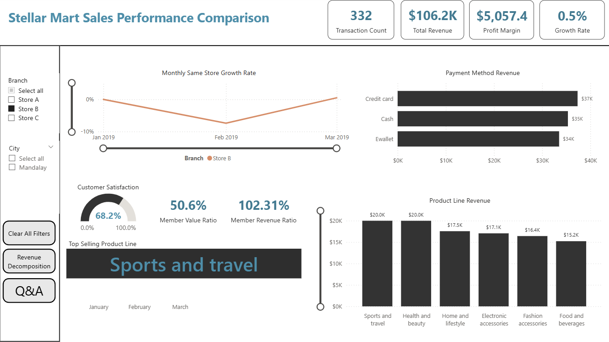

Why do three branches of the same supermarket chain perform so differently? I cleaned the data, built the KPIs in DAX and compared the branches in an interactive Power BI report.
Power BI Desktop reports can't be embedded in a static site, so here is a screen recording of each branch dashboard in use: the drillthrough pages, custom tooltips and drill-down interactions.
Store A, Yangon: monthly growth, product line revenue and payment mix.
Business problem
Three cities, three different results
Stellar Mart is a mid-sized supermarket chain with branches in Yangon, Mandalay and Naypyitaw, selling across six product lines and running a membership program called Stellar Rewards. In 2019 management saw uneven sales, different profitability by branch and varying customer engagement, and wanted to know why some branches outperform others and how customer preferences drive revenue.
The questions I set out to answer:
Which branch is growing, which is stalling, and when did each one dip?
How much do members contribute compared with non-members?
Which product lines carry each branch, and where is the group over-reliant on one category?
Which payment methods bring in revenue, and which ones are the most efficient?
Approach
From raw export to interactive report
Cleaned the data in ExcelRemoved duplicates, fixed inconsistent text values and handled missing values so the dataset was complete before analysis.
Validated it in SQL ServerLoaded the cleaned file into SQL and ran queries to confirm row counts, totals and category values before modeling.
Modeled and measured in Power BIBuilt the data model, then wrote the five KPIs below as DAX measures.
Designed interactive dashboardsOne group-level executive page plus a page per branch, with drillthrough, custom tooltips and drill-down/up hierarchies.
Wrote up insights and recommendationsEach dashboard comes with positive findings, risks and actions for management.
Group-level executive dashboard: revenue by month and branch, product line contribution, payment mix and satisfaction.
Members bring in just over half of revenue (50.8%), so the loyalty program is clearly pulling its weight.
Food & Beverages is the top category for the group, followed by Sports & Travel and Electronics.
Credit card payments are the most efficient, even though cash brings in the most revenue.
Customer satisfaction is steady across all three branches, averaging about 7 out of 10.
Worth watching
All three branches dipped in February, and Store A fell furthest (down 23% from January).
Store B barely recovered in March (+0.5%), while Store A bounced back strongly (+26.1%).
Health & Beauty is the weakest line for the group, a gap for cross-selling.
Each branch leans on a different category, so none of them is balanced.
Branch comparison
Same chain, three stories
Store A, Yangon
+26.1%
sales growth, February to March
Revenue: $106.2K
Top category: Home & Lifestyle ($22.4K)
Top payment: E-wallet ($39.3K)
Risk: deepest February drop, and its leading category is weak at group level
Store B, Mandalay
+0.5%
sales growth, February to March
Revenue: $106.2K
Top category: Sports & Travel ($20.0K)
Top payment: Credit card ($37.3K), evenly split
Risk: flat momentum and the lowest satisfaction of the three
Store C, Naypyitaw
+12.9%
sales growth, February to March
Revenue: $110.6K
Top category: Food & Beverages ($23.8K)
Top payment: Cash ($43.1K)
Risk: heavy reliance on cash and weak Home & Lifestyle sales

Branch-level dashboard (Store B), one of three with the same layout so branches can be compared directly.
Recommendations
What I would tell management
Stabilize growth. Run consistent monthly promotions and balance seasonal categories to smooth out dips like February's.
Prioritize Store B. Focus on service quality, personalized offers and local campaigns to restart growth in Mandalay.
Optimize payments. Offer cashback or member-only discounts to move customers from cash and e-wallet towards credit cards.
Lean on membership. Add tiered rewards and member-only campaigns, since members already drive over half of revenue.
Broaden the product mix. Keep pushing Food & Beverages while bundling and cross-selling Health & Beauty and Lifestyle.
Monitor monthly. Track KPIs at store level so a drop like February's is caught and acted on early.
Scope note: the dataset covers January to March 2019 only, so the February dip can't be tested against a full seasonal cycle. With a full year of data I would check whether it repeats.